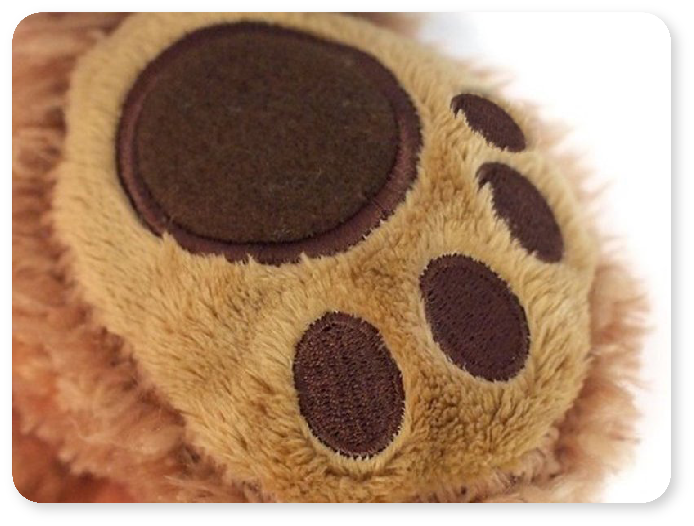

A teddy bear's paw as a joystick and a delightful GUI, conveying IT fundamentals. Give it a try!
In medievel times, only a small number of people could read and write, and it gave them a great advantage. Today, every child learns reading and writing. But while IT plays an increasing part in our lives, only a small number of people can read and write it's code, and it too gives them an advantage.
A scenario, in which children learn IT in elementary school is not unlikely in close future. In fact, the nature of children's imaginative and divergent thinking could be harvested in IT development. This project was an attempt to teach the binary number system to children between age 8 and 10.
A cute graphical user interface guides the child through 2 stages. First, the very basic if-then principle is taught by tipping over pots of honey. Then, the binary number system is taught by gathering 4 bits of bees in a beehive. During the 'lesson', the child sits next to a large teddy bear (danish: "bamse"), holding its paw and tapping the fingers to select the honey pots or bee bits. Pieces of conductive cloth on the paw are connected to a modified wireless keyboard inside the teddy bears cushion.
